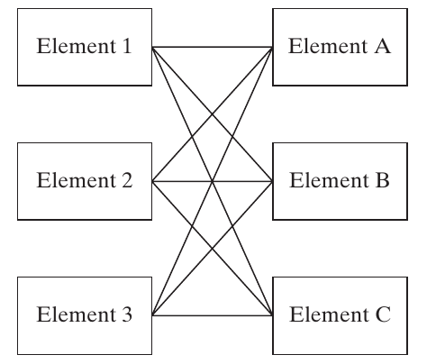

Architectures as decision vectors
For decision \(i\) , choose one value from an allowed set \(D_i\) :
\[A=(x_1,\ldots,x_n),\qquad x_i\in D_i.\]
An Apollo-style encoding includes:
[EOR, earthLaunch, LOR, moonArrival, moonDeparture, cmCrew, lmCrew, smFuel, lmFuel]
The dictionary and ordering give the vector meaning.
Read the vector as a compact architecture description, not a complete engineering specification. Units, option dictionaries, and dependencies belong in the model documentation.
Reuse Chapter 14’s naming: earthLaunch has alternatives orbit/direct. An illustrative valid vector is [no, orbit, yes, orbit, orbit, 3, 2, storable, storable].
The printed §16.2 Apollo vector starts with EOR=yes while calling itself the actual architecture. This conflicts with the LOR-only configuration used in our Chapter 14 discussion. Do not teach EOR=yes as the historical Apollo choice. The purpose here is the encoding.
Ask whether swapping the two crew entries preserves meaning. It does not unless the dictionary also changes.
Source: Crawley, Cameron & Selva (2016), §16.2, p. 375.
The value function
\[A\ \xrightarrow{\quad V\quad}\ M=(M_1,\ldots,M_p)\]
Input: a candidate architecture.Model: physics, cost estimates, risk models, and documented judgments.Output: metrics that reflect stakeholder needs.
Apollo: minimize launched mass and maximize mission success .
The value function is an evaluator that can return a vector. It need not be a single weighted utility score.
Ask what lives inside Apollo’s V: the rocket equation, mass assumptions, and the operation-level risk table. Changing an assumption can move many points in the tradespace.
Explain the compression twice: the architecture vector leaves out design detail, and the metric vector leaves out stakeholder detail. Each compression needs justification.
The arrow is the input/output abstraction of Fig. 16.1, not an OPM procedural link. Keep mathematical evaluation distinct from the system’s physical function.
Source: Crawley, Cameron & Selva (2016), §16.2 and Fig. 16.1, pp. 375–376.
Multiple objectives and feasibility
Let \(\mathcal F\) be the architectures that satisfy all hard constraints.
\[\mathcal A^*=\{A\in\mathcal F:\nexists B\in\mathcal F\text{ with }V(B)\succ V(A)\}\]
Here \(\succ\) means dominates in the stated metric directions.
State the preferred direction of every metric.
Retain non-dominated tradeoffs.
Use stakeholder preferences to choose among them.
The compact Pareto expression identifies candidates through their metric values. Equal metric vectors can correspond to several distinct architectures, all of which may deserve further comparison.
The book writes an argmax of a metric vector. Interpret this as multiobjective non-dominance, not as a request for one vector that independently maximizes every component. Mass is a minimization metric unless its sign is reversed.
Ask students why “best mass and best reliability” might describe no single architecture.
Dominance is conditional on this feasible set and these metrics. A non-dominated point is not a certificate of real-world desirability.
Source: Crawley, Cameron & Selva (2016), §16.2, p. 375; Chapter 15 Pareto analysis.
Useful metrics and traceable judgments
A metric should vary across the architectures under study.
Prefer a small, interpretable set: the book suggests 2–5 , often 2–3 .
Keep essential requirements even when they do not distinguish candidates.
Record the rationale behind subjective scores.
Examine sensitivity to aggregation and weights.
If safety is identical for all modeled hybrid-car candidates, it does not help rank them. That does not authorize dropping safety requirements or verification.
With many competing objectives, dominance becomes less selective. A unique best performer in one metric cannot be dominated, but tied maxima need closer inspection. The book’s statement about any maximum should be read with this qualification.
Scientific value and community engagement can require judgment. Subjectivity is not automatically invalid; untraceable or inconsistent judgment is the problem.
Appendix C discusses rule-based evaluation and explanations. Here students need to know why a score was assigned, not the implementation details of that appendix.
Source: Crawley, Cameron & Selva (2016), §16.2, p. 376.
Hard and soft constraints
Hard
Reject the architecture
LOR requires lunar-orbit arrival
Soft
Retain it with a penalty
A desirable range target
Illustrative penalty for shortfall below range \(r_0\) :
\[C_{\mathrm{effective}}=C+\lambda\max(0,r_0-r),\qquad\lambda\geq0.\]
Ask students to identify the units of lambda. If C is dollars and range is kilometres, lambda is dollars per kilometre of shortfall.
This linear penalty is a classroom formulation, not a formula supplied by the chapter. Other penalty shapes are possible.
A hard constraint can express physical consistency, an inviolable requirement, or an analyst’s screening rule. The last use deserves scrutiny because it may remove useful architectures before comparison.
The book’s 5 km car-range threshold illustrates screening and soft penalties, not a universal market requirement. A soft penalty cannot make a physically meaningless simulation meaningful.
Optimization transformations such as Lagrange multipliers do not change what stakeholders actually require.
Source: Crawley, Cameron & Selva (2016), §16.2, p. 377.
Combinatorial growth and model scope
For independent decision domains:
\[N_{\mathrm{raw}}=\prod_{i=1}^{n}|D_i|.\]
Categorical choices do not supply ordinary derivatives.
More options improve coverage but increase computation.
Constraints and duplicate encodings change the effective count.
Difficulty depends on the evaluator and mathematical structure.
“Independent domains” means each decision has a defined choice set, not that the decisions have independent effects on value.
The text describes NP-hardness as exponential time and suggests a practical limit near 15–20 decisions. Treat those as cautions about scale, not formal theorems or universal limits. NP-hardness does not prove an exponential lower bound, and many structured discrete problems are tractable.
Direct gradients are unavailable for unordered labels such as fuel types. Structured integer methods, relaxations, or mixed formulations may still help in suitable problems.
Ask which matters more: 20 binary choices with microsecond evaluation, or eight choices with a day-long simulation? Compute a time budget before deciding.
Source: Crawley, Cameron & Selva (2016), §16.2, p. 376; §16.6, pp. 408–410.
16.4 Six patterns of architectural decisions
A pattern describes recurring decision structure. An architectural style describes a recognizable family of solutions within that structure. Source: §16.4, pp. 379–403.
Patterns and architectural styles
Pattern: the structure of a recurring decision problem.Style: a characteristic way to organize the resulting architecture.
Examples:
ASSIGNING admits channelized and fully cross-strapped styles.
PARTITIONING admits monolithic and distributed styles.
CONNECTING admits bus, star, ring, mesh, and tree styles.
The chapter traces the idea to Christopher Alexander’s building patterns and the reusable software designs popularized by the Gang of Four.
Alexander’s example of light from two sides of a room includes a recurring problem and ways to address it in differently sized buildings. The architectural decision patterns here chiefly organize the problem rather than prescribe one universal solution.
Classical optimization problems, including knapsack and traveling salesman, provide related mathematical structures.
Ask whether “choose a distributed architecture” specifies a decision pattern or a style. It is a style preference that still requires concrete grouping decisions.
Patterns are useful mental models even when no optimization program is written.
Source: Crawley, Cameron & Selva (2016), §16.4, pp. 379–381.
The six patterns at a glance
DECISION-OPTION
Which one option for each decision?
DOWN-SELECTING
Which subset of candidates?
ASSIGNING
Which links between two sets?
PARTITIONING
Which non-overlapping groups?
PERMUTING
Which one-to-one placement or order?
CONNECTING
Which links within a fixed node set?
Use the vocabulary consistently throughout the lecture. The names identify mathematical structure, not six mutually exclusive kinds of real system.
Ask students to classify packing instruments into unlabeled spacecraft versus allocating instrument copies to named orbits. Those are different questions despite both sounding like “assignment.”
We will give each pattern a representation, a count before extra constraints, a case example, and the architectural tradeoffs it exposes.
Keep the distinction between an encoding and a physical system visible: a binary 1 can mean selecting an instrument, installing a copy, or connecting a cable depending on the model.
Source: Crawley, Cameron & Selva (2016), Table 16.2, p. 381.
DECISION-OPTION: one choice per decision
\[A=(x_1,\ldots,x_n),\quad x_i\in O_i,\qquad N=\prod_i m_i.\]
1
1.1
1.2
1.3
2
2.1
2.2
3
3.1
3.2
3.3
3.4
Three decisions give \(3\times2\times4=24\) raw architectures.
This editable morphological matrix reproduces the structure of Table 16.3. An architecture selects one entry in each row.
Ask students to decode [2,1,3]. It chooses options 1.2, 2.1, and 3.3.
Each decision has its own domain. A memory capacity is not automatically an option for processor type.
Continuous attributes require a finite set or a stated discretization if this pattern is used literally. The book’s spring rates of 400, 500, and 600 lb/in illustrate such a choice.
Sequence and compatibility are not implicit. Add constraints when needed.
Source: Crawley, Cameron & Selva (2016), §16.4, pp. 381–384; Table 16.3.
Two DECISION-OPTION architectures
The same choice sets support different architecture vectors. Source: Crawley, Cameron & Selva (2016), Fig. 16.3, p. 382.
Trace one selected option for each decision in each half of the diagram. These are generic decision graphs, not a system-behavior notation.
Invite a student to move from [2,1,3] to [1,1,2]. Two entries change; the second decision remains fixed.
Discuss why “independent options” does not imply that their performance contributions can be added independently. The evaluator may have strong interactions.
A decision tree can express the same choices, but it can quickly become too large to inspect.
Source: Crawley, Cameron & Selva (2016), Fig. 16.3, p. 382.
Autonomous underwater vehicle choices
Bluefin 12 BOSS, Nereus, and SeaExplorer illustrate alternative AUV forms. Source: Crawley, Cameron & Selva (2016), Fig. 16.4, p. 383.
Use the images to motivate specialization before presenting the count. Shape, propulsion, power, and sensing interact with the operational concept.
Ask whether hovering and efficient long-distance transit necessarily favor the same configuration.
These are examples in the book, not a specification comparison of current products. Original credits: NOAA; AUVfest 2008/Navy/NOAA; Alseamar.
The next table lists the chapter’s abstract options. Do not infer that each pictured vehicle has every listed alternative.
Source: Crawley, Cameron & Selva (2016), Fig. 16.4, p. 383.
AUV: ten decisions, 4,608 combinations
Configuration
Torpedo, blended wing, hybrid, rectangular
Swim / hover
Yes or no for each
Navigation
Dead reckoning, acoustic positioning
Propulsion
Propeller, Kort nozzle, passive gliding
Motor
Brushed, brushless
Power
Rechargeable batteries, fuel cells, solar
Sonar / magnetometer / thermistor
Yes or no for each
\(4(2)(2)(2)(3)(2)(3)(2)(2)(2)=4{,}608\) before constraints .
There are ten decisions, despite seven displayed rows: swim and hover are separate, as are the three sensor decisions.
Ask for invalid or operationally implausible combinations. Passive gliding with a motor choice may introduce irrelevant values; solar power depends on an appropriate operating concept.
A raw Cartesian product is a starting point. It is not a count of 4,608 feasible, distinct, useful vehicles.
This pattern commonly supports specialization and characterization of form and function.
Source: Crawley, Cameron & Selva (2016), §16.4, pp. 383–384.
Aerial network: duplicate encodings
Ten candidate balloon sites. Per site:
Radio: type A, type B, or no balloon .
Altitude: low or high.
Raw encoding: \(6^{10}=60{,}466{,}176\) vectors.
With one canonical no-balloon state:
\[5^{10}=9{,}765{,}625\ \text{distinct site-choice combinations}.\]
This derived count assumes at most one balloon per site and that all four radio-altitude combinations are allowed for an occupied site.
The book deliberately exposes the duplication: an empty site has no physical altitude. Two encoded states therefore represent one architecture choice.
Ask students whether eliminating duplicate encodings is the same as eliminating a bad architecture. It is not; it avoids counting the same alternative repeatedly.
If radio types can mix across sites, the model must address interoperability. If several balloon types can occupy a site, the ASSIGNING formulation later allows a different design space.
The chapter’s approximate 60 million count describes raw vectors.
Source: Crawley, Cameron & Selva (2016), §16.4, p. 384; canonical count derived for class.
DOWN-SELECTING: a subset of candidates
\[S\subseteq U,\qquad A=(x_1,\ldots,x_m),\ x_i\in\{0,1\}.\]
\[N=2^m\quad\text{including the empty and full subsets}.\]
Instrument order:
[radiometer, altimeter, imager, sounder, lidar, GPS, SAR, spectrometer]
[1,1,0,0,0,1,0,0] selects radiometer, altimeter, and GPS.
Ask what flipping a bit does physically: it adds or removes one candidate instrument. In ordinary DECISION-OPTION, a change may instead replace one incompatible option with another.
For eight instruments, there are 256 subsets before budget and other constraints.
The subset structure gives search algorithms useful information. Adding an item changes its cost and benefit and may change interactions with items already present.
The chapter’s second printed example has a vector with an extra entry relative to the eight-item set. Its intended imager/sounder/SAR/spectrometer subset is [0,0,1,1,0,0,1,1]. Keep the dictionary explicit.
Selecting goals and choosing among several allowable solution forms are common applications.
Source: Crawley, Cameron & Selva (2016), §16.4, pp. 384–386.
Two selected subsets
Both architectures use the same candidate set; the selected members differ. Source: Crawley, Cameron & Selva (2016), Fig. 16.5 and §16.4, pp. 385–386.
Solid rectangles show selected elements and dashed rectangles show omitted ones. Ask students to read the corresponding binary strings.
A point with fewer elements can outperform a larger subset if the latter wastes resources or introduces interference.
In the NEOSS case, selecting radar altimetry without the complementary radiometer can reduce achievable measurement accuracy because an atmospheric correction is missing.
Ask what model output would reveal that loss. A count of instruments alone would not.
Source: Crawley, Cameron & Selva (2016), Fig. 16.5 and §16.4, pp. 385–386.
Interactions change subset value
Synergy
Toothbrush with toothpaste
Altimeter with radiometer
Redundancy
Several similar toothpastes
Overlapping topographic measurements
Interference
Hot food beside a cold drink
Power or orbit conflicts
A useful subset combines high synergy , low interference , and limited redundancy .
A classical 0/1 knapsack adds fixed item values subject to a resource bound. This chapter’s subsets can have context-dependent values, so simply sorting items by benefit/cost can fail.
Radar altimetry and microwave radiometry can work together through humidity correction. SAR and lidar can compete for resources or preferred orbital conditions. These interactions require the evaluator to know more than instrument names.
The book calls favorable recurring combinations schemata. We will return to the precise binary-string meaning in genetic algorithms.
Ask whether redundancy is always wasteful. It may instead be valuable when the metric includes fault tolerance; interpretation depends on the function and failure model.
Source: Crawley, Cameron & Selva (2016), §16.4 and Box 16.1, pp. 386–387.
A worked subset-selection problem
Classroom data: budget \(=6\) cost units.
Selecting A and B together adds a synergy bonus of 4.
Which feasible subset has the highest benefit?
Give students a minute before revealing the answer. Feasible subsets are empty, A, B, C, and AB. AC, BC, and ABC exceed the budget.
Benefits are 0, 4, 3, 8, and 4+3+4=11 respectively. AB wins even though C has the highest standalone benefit/cost ratio.
Without the synergy term, C would beat AB’s benefit of 7. Thus the interaction changes the architecture recommendation.
Ask how to encode the evaluator: B(x)=4x_A+3x_B+8x_C+4x_Ax_B, with 3x_A+3x_B+4x_C≤6.
These numbers are illustrative and do not quantify actual instruments.
Source: Crawley, Cameron & Selva (2016), §16.4 and Box 16.1, pp. 386–387; classroom example.
Subset selection beyond instruments
NLP strategies: complementary methods can improve coverage while consuming development and computation resources.Spectral bands: additional bands can add information, duplicate a capability, or enable corrections.Projects and goals: a limited budget forces scope choices.
The benefit of an addition depends on what is already selected.
The chapter uses IBM Watson’s combination of language-processing strategies and a hypothetical next-generation RapidEye band-selection problem. Present these as historical teaching cases, not current product specifications.
Deep and shallow language-processing approaches motivate complementary capabilities. For spectral bands, measurements of the same constituent motivate redundancy, while cloud or atmospheric information can enable corrections.
The text mentions 2.2 and 4.7 micrometre bands and a 1.6 micrometre correction example. The lesson is conditional value; detailed spectral retrieval physics would require a separate instrument model.
Ask students to name two course projects that share equipment. Their combined cost need not equal their separate costs.
Source: Crawley, Cameron & Selva (2016), §16.4, p. 386.
ASSIGNING: links between two sets
For \(m\) left elements and \(n\) right elements:
\[a_{ij}=\begin{cases}1&\text{left }i\text{ is assigned to right }j\\0&\text{otherwise.}\end{cases}\]
\[A\in\{0,1\}^{m\times n},\qquad N=2^{mn}.\]
Each left element may link to none, one, or several right elements.
This is a many-to-many relation in the general pattern. Exactly-one assignment is an additional constraint, not the default.
Examples include workers to tasks, processes to objects, instruments to orbits, or sensors to computers. In OPM, a process-object allocation still needs a precise procedural role; a generic binary matrix does not specify whether an object enables, is consumed by, or is affected by a process.
The matrix has mn independent binary positions before added constraints. Six instruments and three orbits give 2^18=262,144 architectures.
Ask whether assigning one instrument type to two orbits means teleporting one physical unit. It generally means deploying two copies.
Source: Crawley, Cameron & Selva (2016), §16.4, pp. 388–390.
NEOSS instrument-to-orbit assignment
Instrument types can appear in more than one orbit, or in none. Source: Crawley, Cameron & Selva (2016), Fig. 16.6, p. 388.
Trace the sounder and radiometer to geostationary and sun-synchronous orbits, radar to sun-synchronous and polar orbits, imager to sun-synchronous orbit, and lidar to polar orbit. GPS is unused.
Count eight assignments in this illustration. A type appearing twice represents multiple deployed instances in this simplified model.
This reduced example introduces geostationary orbit and six instrument types to illustrate a pattern. It is not the same domain as the earlier eight-instrument NEOSS setup.
Ask which constraints would limit available power or prohibit an instrument-orbit pairing.
Source: Crawley, Cameron & Selva (2016), Fig. 16.6, p. 388.
Assignment constraints change the count
For \(m\) left elements and \(n\) right elements:
Any subset
\(2^{mn}\)
At least one right element
\((2^n-1)^m\)
Exactly one right element
\(n^m\)
For 3 sensors and 2 computers: 64 , 27 , or 8 .
Derive one row at a time. Two computers have four subsets: empty, first, second, both. Removing empty leaves three; requiring exactly one leaves two.
Raise each per-sensor count to three because the constraints in this classroom example are local to each sensor. Shared capacity limits would couple the rows and invalidate that simple product.
The book’s second generic example uses 3 by 5 elements, giving 2^15=32,768.
Ask students to explain why “exactly one computer per sensor” does not require each computer to have exactly one sensor. Many-to-one mappings remain possible.
Source: Crawley, Cameron & Selva (2016), §16.4, pp. 388–392; constrained counts derived for class.
Channelized and cross-strapped styles
Fully cross-strapped

Source: Figs. 16.8–16.9, p. 391. Partial connections give intermediate architectures.
The figures show three isolated channels versus nine cross-connections. The ideal isolated-chain illustration is stronger than merely saying each left node has one right node: sharing a right node could still couple the chains.
Reconnect to Chapter 15’s GNC architecture study. Sensor-to-computer and computer-to-actuator links are separate assignment layers.
The book uses Saturn V’s functional decomposition and X-38’s independent buses as channelized examples, and Total Football and Space Shuttle avionics as examples of more coupled mappings or connectivity.
Suh’s functional-independence principle motivates decoupling. Shared form can nevertheless reduce parts, mass, volume, and cost.
Source: Crawley, Cameron & Selva (2016), §16.4, pp. 390–392; Figs. 16.8–16.9.
Connectivity, cost, and failures
Fewer interfaces and lower connection cost
More interfaces and greater complexity
Fewer alternative paths
More potential redundancy and throughput
Greater isolation between chains
More opportunities for failure propagation
The choice depends on connection cost , value of reliability , and the failure model .
Avoid turning these tendencies into guarantees. A fully cross-strapped system is more reliable only under an appropriate model of component, interface, and dependent failures.
The book’s common-cause discussion includes one failed sensor damaging connected computers. Distinguish this propagated failure from a shared external cause such as loss of common power; both undermine an independent-failure calculation.
Ask which style would be attractive if cables are nearly massless but can transmit damaging faults. The answer may differ from the independent-failure result.
An extra nine of reliability costs something. The stakeholder’s cost-reliability preferences and credible failure dependencies help determine whether that cost is worthwhile.
Source: Crawley, Cameron & Selva (2016), Box 16.2, p. 392.
PARTITIONING: exhaustive, disjoint groups
Partition \(U\) into nonempty groups \(S_1,\ldots,S_k\) :
\[\bigcup_{i=1}^{k}S_i=U,\qquad S_i\cap S_j=\varnothing\quad(i\ne j).\]
Every element belongs to exactly one group.
The number of groups can vary from 1 to \(|U|\) .
Group labels do not define different architectures.
Example: {{radar, radiometer}, {imager, sounder, GPS}, {lidar}}.
Pairwise disjointness is essential. The book prints an empty intersection over all groups, which is too weak: three groups can have no common element while still overlapping pairwise.
Give the counterexample {a,b}, {b,c}, {a,c}. Their total intersection is empty, but each element appears twice. It is not a valid partition.
Unlabeled bins distinguish a partition from assignment to named spacecraft or orbits. Relabeling satellite 1 as satellite 2 changes no grouping by itself.
Partitioning does not decide precise facility positions or orbital parameters; those require further decisions.
Source: Crawley, Cameron & Selva (2016), §16.4, p. 393.
Two instrument-packaging architectures
Every instrument appears exactly once; the groups change. Source: Crawley, Cameron & Selva (2016), Fig. 16.10, p. 393.
Ask students to list the groups on each side. Left: lidar alone; radar with radiometer; imager with sounder and GPS. Right: lidar alone; radar alone; imager with sounder; radiometer with GPS.
Count instruments rather than labels to verify completeness. Ask what decision would permit leaving one out: a separate DOWN-SELECTING decision.
Explain that the partition determines what shares a platform. A platform design step must subsequently check mass, power, interfaces, and orbit compatibility.
Grouping radar and radiometer can support measurement synergy, but only if their operating conditions actually permit coordinated observations.
Source: Crawley, Cameron & Selva (2016), Fig. 16.10, p. 393.
Encoding and counting partitions
For ordered elements \([a,b,c,d]\) :
[1,1,2,3] represents {{a,b},{c},{d}}.
[7,7,2,9] represents the same partition .
3
5
5
52
8
4,140
10
115,975
Canonical labels assigned in order of first appearance eliminate this representation redundancy. Starting from [7,7,2,9], rename the first encountered group 1, the next 2, and the next 3.
Bell numbers count all partitions. Stirling numbers of the second kind S(m,k) count partitions into exactly k nonempty groups; B_m is their sum.
Ask students to enumerate the five partitions of {a,b,c}: all together, all separate, and each of the three possible pairs plus a singleton.
Fig. 16.11 illustrates two eight-element partitions. Its B_8 count is captured in this editable table.
Do not use m^m as the number of distinct unlabeled partitions.
Source: Crawley, Cameron & Selva (2016), §16.4, pp. 394–395; reference [19], pp. 417–418.
Partitioning in other systems
Oil reservoirs: group reservoirs served by a common facility.Service engineers: group engineers supported by a common supply manager.Function decomposition: group lower-level processes into larger functions.
The partition decides which elements share a group . Further models determine location, capacity, and feasibility.
The book’s three-reservoir example has five partitions. Ask students whether grouping A and B locates their common facility on a map. It does not.
The service network example has 3,000 engineers, each assigned to one manager. Capacity and geography can make many mathematical partitions impractical.
Mapping function to form and decomposition are the most direct architecting tasks for this pattern.
In OPM, a grouping choice can inform decomposition or the allocation of processes to objects. Preserve the distinction between a structural grouping and a claim about what each process actually does.
Source: Crawley, Cameron & Selva (2016), §16.4, pp. 394–395.
Monolithic and distributed architectures
One large group
One group per element
Shares common infrastructure
Replicates common infrastructure
Can capture close-coupled synergies
Can isolate interference and failures
Integration links development schedules
Smaller units can evolve separately
Shared resources may become bottlenecks
Coordination can add cost and complexity
These styles are the two ends of a partitioning tradespace. Intermediate groupings can preserve valuable synergies while separating incompatible elements.
Cost depends on both replicated common functionality and the cost of interference. A shared solar array saves duplication but can create a power bottleneck and a common vulnerability.
Distributed systems are not automatically redundant. If each unique instrument flies once, losing one still loses its measurement, even if the other instruments survive.
Ask students whether faster replacement of a smaller satellite improves evolvability even when the initial hardware costs more.
Source: Crawley, Cameron & Selva (2016), Box 16.3, pp. 395–396.
What drives the grouping decision?
Strength of synergies and interferences.
Physical proximity needed for those interactions.
Cost of replicated power, communication, structure, and support.
Resource competition and failure concentration.
Development time, expense profile, and opportunities to upgrade.
DOWN-SELECTING asks whether both instruments are present. PARTITIONING asks whether their placement allows the interaction to occur.
Radar-altimeter and radiometer measurements must be sufficiently coordinated and registered to realize their synergy. Merely flying somewhere in the same program is insufficient.
In the book’s Envisat discussion, shared infrastructure and common observations come with power competition, launch risk, and dependence on the least ready instrument. Metop illustrates vibration interference from a scanning instrument to a sensitive sounder.
The chapter reports Envisat at roughly eight tonnes, ten instruments, over two billion euros, and over ten years of development. Use these as historical case details, not current cost estimates. Its specific SAR duty-cycle claim should not be generalized to all radar modes.
Ask which grouping remains attractive if the maturity of one instrument slips by three years.
Source: Crawley, Cameron & Selva (2016), §16.4 and Box 16.3, pp. 395–397.
PERMUTING: exclusive positions
Match \(m\) elements to \(m\) positions, one element per position.
\[N=m!\]
For the order 2, 4, 1, 3 :
Element occupying each successive position
[2,4,1,3]
Position assigned to each successive element
[3,1,4,2]
The two vectors are inverse descriptions of the same arrangement.
Use explicit semantics instead of relying on potentially confusing labels such as “element-based.” In the second row, element 1 goes to position 3, element 2 to position 1, element 3 to position 4, and element 4 to position 2.
Ask students to reconstruct the first vector from the second. This is a useful check against encoding mistakes.
Positions can be launch slots, locations on a board, or other exclusive options. The pattern does not require a temporal interpretation.
A permutation is a bijection: each element and each position appears exactly once.
Source: Crawley, Cameron & Selva (2016), §16.4, pp. 397–398.
Two permutations of five elements
Five elements have 5! = 120 possible arrangements. Source: Crawley, Cameron & Selva (2016), Fig. 16.12 and §16.4, pp. 397–398.
Trace all five links and verify that no position has two occupants. A generic binary matrix without row and column constraints would admit many invalid configurations.
Ask why a vector with repeated entries, such as [1,1,3,4,5], cannot represent this permutation.
The count for 15 elements is 15!=1,307,674,368,000, already over a trillion. This motivates selective search.
Factorial growth eventually exceeds any fixed-base exponential c^m. The exact practical limit still depends on evaluation cost and exploitable structure.
Source: Crawley, Cameron & Selva (2016), Fig. 16.12 and §16.4, pp. 397–398.
Order, layout, and operations
NEOSS: launch order affects data continuity and budgets.Circuit layout: placement changes total interconnection length.Vehicle operations: task order changes travel and resource use.Exploration portfolios: destination sequence changes capability development.
An order alone may still need dates, durations, or geometry.
The book connects circuit placement to the importance of total wire length and uses NASA’s historical Flexible Path discussion as a portfolio-sequencing example.
Treat those as illustrations of decision structure, not claims about current chip specifications or current NASA plans.
Ask whether “A then B” gives a launch date. It does not. Development durations, launch availability, annual budgets, and precedence constraints can still determine feasibility.
Operations belong in architectural reasoning early because the concept of operations generates goals and metrics.
Position exclusivity also supports layouts with no natural first-to-last ordering.
Source: Crawley, Cameron & Selva (2016), §16.4, pp. 398–399.
Front-loaded and incremental deployment
Prioritizes the most valuable systems
Delivers some value sooner
May require a long wait for first value
Builds capability progressively
Can avoid duplicated interim capability
May incur interim or replacement costs
Greater exposure to program cancellation
More opportunities to learn and adapt
The book calls the first style “greedy deployment,” assuming high-value elements are costly and slow to develop. Distinguish this architectural style from a generic greedy optimization algorithm.
Ask which strategy stakeholders can sustain through years of spending without operational benefit.
Incremental delivery can reduce programmatic risk and improve flexibility, but it can also require redundant or temporary capability.
The table gives tendencies under the chapter’s assumptions. If a high-value element is also quick and inexpensive, the apparent conflict may disappear.
A useful evaluation considers value delivery over time, not only the final system’s performance.
Source: Crawley, Cameron & Selva (2016), Box 16.4, p. 399.
CONNECTING: a graph on a fixed node set
\[G=(U,E),\qquad a_{ij}=1\ \text{when edge }i\to j\text{ exists}.\]
One set of nodes, with decisions about connections.
The adjacency matrix is square.
An undirected graph has \(a_{ij}=a_{ji}\) .
Self-connections require an explicit modeling choice.
Nodes can represent systems, objects, processes, or facilities.
The book’s formal paragraph uses “vertices” for connections. Use the standard distinction: vertices or nodes are elements, and edges are connections.
Clarify whether an edge means a physical cable, a possible flow, or a logical dependency. Binary adjacency alone does not encode capacity, delay, or flow magnitude.
Examples include a power grid and a water network with fixed production/treatment locations. Choosing those locations would add further architectural decisions.
ASSIGNING has two distinct node sets and only links across the sets. CONNECTING starts with a single fixed set and permits whatever pairs the domain allows.
Source: Crawley, Cameron & Selva (2016), §16.4, pp. 399–401.
Connectivity and adjacency matrices
The matrices encode which pairs share a connection. Source: Crawley, Cameron & Selva (2016), Fig. 16.13, p. 400.
Ask students to find node 3’s neighbors in the left graph: nodes 1, 2, 4, and 5. The corresponding row has four ones.
Check symmetry and the zero diagonal. Each undirected edge occupies two matrix entries but is only one binary decision.
Both graphs have six fixed nodes; they differ in edges. These are general mathematical network representations, not system-behavior diagrams.
The count 32,768 is 2^15 for six labeled nodes, no self-loops, and at most one edge per pair.
Source: Crawley, Cameron & Selva (2016), Fig. 16.13, p. 400.
Four connectivity counts
For \(m\) labeled nodes and binary connections:
Allowed
\(2^{m^2}\) \(2^{m(m+1)/2}\)
Prohibited
\(2^{m(m-1)}\) \(2^{m(m-1)/2}\)
For 3 nodes without self-connections:
64 directed graphs , 8 undirected graphs .
Derive the exponents as the number of independent yes/no choices. Directed edges use ordered pairs; undirected edges use unordered pairs.
For undirected graphs with loops, count m(m−1)/2 ordinary edges plus m loops, giving m(m+1)/2.
These formulas allow the empty graph and disconnected graphs. A connected-network requirement reduces the count and needs another constraint.
Parallel links, weighted edges, identical unlabeled nodes, and multiple edge types would need a different counting argument.
Ask why squaring the node count is wrong for an undirected loop-free network.
Source: Crawley, Cameron & Selva (2016), Table 16.4, p. 400.
Bus and star topologies
A bus is a shared interface . A star has a central node .
Source: Crawley, Cameron & Selva (2016), Fig. 16.14 and Box 16.5, pp. 402–403.
Ask students to trace a message from element 1 to element 6. Which resource does every such transfer depend on?
In the star, element 4 is a node that can perform processing or act as a source or sink. The bus is a shared interface rather than an additional node in this illustration.
Ask how increasing traffic affects the shared resource. Both styles can encounter bottlenecks, but the flow-control mechanism matters.
These generic graphs depict network topology, not procedural relationships in an OPM model. An architecture model should still state the kind of flow and the roles of its objects and processes.
Source: Crawley, Cameron & Selva (2016), Fig. 16.14 and Box 16.5, pp. 402–403.
Ring, mesh, and tree topologies
Where are the alternative routes , bottlenecks , and failure dependencies ?
Source: Crawley, Cameron & Selva (2016), Fig. 16.14 and Box 16.5, pp. 402–403.
Trace the closed circuit in the ring, alternative paths in the mesh, and branches in the tree. A mesh need not be a complete graph.
Ask students to remove one edge mentally and assess which flows remain possible. Avoid equating graph connectivity with the behavior of a particular forwarding protocol.
The commodity may be data, vehicles, power, water, gas, or food. Reliability, latency, throughput, and scalability depend on both topology and the flow and failure models.
Hybrid architectures combine styles across regions or levels. The following tables summarize the tradeoffs rather than declaring a universal winner.
Source: Crawley, Cameron & Selva (2016), Fig. 16.14 and Box 16.5, pp. 401–403.
Bus, star, and ring tradeoffs
Bus
Low interface cost, easy attachment
Shared bus failure or congestion
Star
Simple hub coordination
Hub bottleneck and failure
Ring
Predictable access in suitable protocols
Dependence on the intact forwarding path
A bus is a shared interface. A hub is a node that can process or relay flow.
The chapter cites launch-vehicle avionics for a bus, airline hub-and-spoke systems for a star, and token-ring networking for a ring. Present these as examples from the text rather than current universal practice.
Qualify the book’s statement that every ring node is a single point of failure. That applies to an unprotected forwarding ring; bypass, dual rings, routing, and protection alter failure behavior. An undirected cycle with one removed node can remain connected as a path.
Likewise, scalability is not unlimited when every flow shares one resource.
Ask whether adding a faster hub changes topology. It changes capability and cost while preserving the star’s structure.
Source: Crawley, Cameron & Selva (2016), Box 16.5, p. 403.
Mesh, tree, and hybrid tradeoffs
Mesh
Alternative routes, distributed cooperation
More links and routing complexity
Tree
Clear hierarchy, maintainable expansion
Failure can disconnect descendants
Hybrid
Different structures for different needs
More interface and coordination choices
Performance depends on where flow originates , where it goes , and how much it carries .
The chapter uses rural communication networks and peer-to-peer systems for mesh structures, and apartment-building distribution networks for trees.
A tree is connected and acyclic. Every edge is a bridge, so losing one can separate the graph; the system-level consequence depends on the traffic and available backup paths.
A mesh can improve fault tolerance, but not every sparse mesh survives every failure. Make the protection target explicit.
Ask students to propose a hybrid campus network and identify where resilience is most valuable. The point is to justify connections through stakeholder needs rather than select a fashionable topology.
Source: Crawley, Cameron & Selva (2016), §16.4 and Box 16.5, pp. 401–403.
Pattern recognition exercise
Choose a natural pattern and state one necessary assumption.
Select experiments within a mass limit.
Divide experiments into spacecraft without duplication.
Deploy instrument copies into named orbits.
Choose the order of four launches.
Select communication links among the spacecraft.
Choose one propulsion type for each spacecraft.
Expected answers: DOWN-SELECTING, PARTITIONING, ASSIGNING, PERMUTING, CONNECTING, and DECISION-OPTION.
Ask what changes if experiments can fly twice. Pure partitioning no longer represents the intended space without changing what the elements mean.
Ask what changes if a launch can carry several spacecraft. A permutation of spacecraft alone no longer describes the full packaging/scheduling problem.
Accept an alternative encoding if students state the constraints and explain what structure is lost or gained. Pattern recognition should not become a vocabulary guessing game.
This is a useful pause before the discussion of overlapping formulations.
Source: Crawley, Cameron & Selva (2016), §16.4, pp. 379–403; classroom exercise.
16.6 Solving the optimization problem
Start with the simplest method that fits the computational budget. Search algorithms do not remove the need for valid encodings and credible evaluators. Source: §16.6, pp. 408–416.
Full-factorial enumeration
Generate every candidate combination.
Reject invalid architectures and duplicate encodings.
Evaluate every remaining architecture.
Retain metrics and explanations.
Apply Pareto analysis and stakeholder preferences.
Enumeration gives both the frontier and the surrounding tradespace.
This builds on the chapter’s nested-loop approach and Chapter 15’s argument for retaining dominated regions to learn about structure.
Distinguish a raw Cartesian product from the feasible set. The book’s Fig. 16.16 shows generation but omits the constraint filter in that snippet; include it in an actual workflow.
Exhaustive evaluation identifies the true Pareto set for the finite model if evaluation and filtering are correct. It does not validate the physical model itself.
Ask what evidence is lost if the tool stores only its final best point. Clusters, sensitivities, alternative families, and explanations can disappear.
Source: Crawley, Cameron & Selva (2016), §16.6, pp. 408–409; Fig. 16.16.
Enumeration algorithm
results = []
for A in CartesianProduct(option_sets):
if not hard_constraints_hold(A):
continue
A = canonicalize(A)
if already_evaluated(A):
continue
metrics, explanation = evaluate(A)
results.append(A, metrics, explanation)
front = nondominated_architectures(results)
This pseudocode generalizes Apollo’s nine nested loops. Canonicalization and duplicate checking are explicit classroom additions motivated by the balloon and partition examples.
The evaluation must apply any soft-constraint penalties consistently, and the Pareto routine must know each metric’s direction.
Ask where a partition generator would fit. Either generate valid partitions directly or preprocess a list of partition options; naïvely looping over arbitrary labels needs constraints and duplicate handling.
Procedural languages specify steps. Declarative/rule-based approaches specify relationships and goals and use an inference mechanism to generate candidates; Appendix C develops that alternative.
Do not run a costly physical simulation on a combination already known to be invalid.
Source: Crawley, Cameron & Selva (2016), §16.6, pp. 408–409; adapted from Fig. 16.16.
The computational budget
Approximate serial evaluation time:
\[T\approx N_{\mathrm{evaluated}}\,t_{\mathrm{eval}}.\]
Classroom example: \(2^{20}=1{,}048{,}576\) candidates.
1 millisecond
17.5 minutes
1 second
12.1 days
1 minute
2.0 years
Broader coverage competes with deeper modeling.
These estimates neglect generation, constraint checking, communication, and storage overhead. Parallelism can help, but speedup is limited by available resources and serial work.
Ask students to decide whether more fidelity is worthwhile before seeing the evaluation budget. A detailed model that evaluates only two arbitrary candidates may be less useful at this stage.
A staged approach can use a simpler model to find families and detailed models to scrutinize survivors, provided screening assumptions are checked.
“Small enough” depends on candidate count, evaluation time, hardware, and tolerable elapsed time, not an immutable number of decisions.
Source: Crawley, Cameron & Selva (2016), §16.6, p. 408; classroom calculation.
Heuristic search for large spaces
Generate promising candidates without visiting every combination.
Use evaluated results to guide subsequent search.
Seek several good architectural families.
Treat the returned front as an approximation unless completeness is established.
Flexible heuristics suit categorical, nonlinear, and nonsmooth models.
The chapter favors metaheuristics because they require relatively little problem structure. This is a pragmatic choice, not a claim that they outperform every exact or specialized algorithm.
Branch-and-bound, cutting planes, network methods, and dynamic programming can be useful when their mathematical assumptions fit. Standard gradients are unsuitable for arbitrary category labels.
A run that stops improving may have converged locally or simply exhausted its search budget.
Ask students what would justify saying “globally optimal.” Exhaustive coverage, a valid optimality bound, or another mathematical certificate would be needed, not just a long run.
Source: Crawley, Cameron & Selva (2016), §16.6, pp. 409–410; reference [27].
Generator, evaluator, and search agent
Search directions connect candidate generation to evaluation feedback. Source: Crawley, Cameron & Selva (2016), Fig. 16.17, p. 410.
Trace one cycle: generate an architecture, evaluate it using stakeholder requirements, then use metrics and explanations to choose another region or change.
With full enumeration, generation and final filtering can be separate. With heuristic search, generating candidates and selecting survivors become intertwined.
The evaluator’s explanation can show why a design failed or which requirement created a penalty. That information is useful to the human architect even if the search operator uses only numbers.
Ask which box contains stakeholder judgments and which box proposes new decision vectors.
Source: Crawley, Cameron & Selva (2016), Fig. 16.17, p. 410.
A population-based search cycle
A population carries multiple alternatives through successive generations. Source: Crawley, Cameron & Selva (2016), Fig. 16.18, p. 411.
Walk through all six numbered steps. Initial generation precedes evaluation; each iteration tests termination, selects parents or survivors, and creates the next candidates.
Evaluation rules define performance. Selection rules decide which architectures contribute. Search rules decide how new candidates are constructed.
Populations are useful when the goal is several Pareto families instead of one best scalar solution.
The termination branch should not be interpreted as proof that the mathematical frontier was found. It may simply represent a budget limit.
Source: Crawley, Cameron & Selva (2016), Fig. 16.18, p. 411.
Selection, diversity, and stopping
Preserve high-quality candidates through elitism.
Retain diversity across the tradeoffs and architecture families.
Generate new candidates through search operators.
Stop at a stated time, evaluation, generation, or improvement limit.
Compare final candidates with baselines and further analysis.
Pareto rank is useful in multiobjective selection, but rank alone may let the population crowd into one narrow region.
Some dominated candidates can contribute diversity and lead to useful new combinations. Selection is not identical to immediately discarding every dominated point forever.
Elitism means retaining high-quality solutions across generations; selecting only current Pareto points as parents is one possible rule, not the entire definition.
Ask what happens if every individual becomes the same architecture. Crossover alone then offers little novelty.
Final preference selection remains a stakeholder decision informed by the search results.
Source: Crawley, Cameron & Selva (2016), §16.6, pp. 411–412, 414–415.
Generating feasible initial populations
Randomly choose valid decision options or binary values.
Reject infeasible samples when rejection is inexpensive.
For tight constraints, generate feasible candidates directly.
Alternatively, repair an infeasible candidate.
Check whether sampling or repair favors particular regions.
For an unconstrained DECISION-OPTION problem, sample one option per decision. For a subset problem, sample a binary vector.
Rejection sampling can become ineffective when feasible candidates occupy a tiny fraction of the raw space. Record the acceptance rate rather than assuming randomness is sufficient.
Repair requires a definition of a nearby feasible architecture. It can introduce systematic bias, for example always deleting the most recently added instrument.
Ask students how to sample a permutation directly. Shuffle the element list rather than sample positions independently and hope there are no repeats.
Feasible-by-construction generation still needs the additional domain constraints checked.
Source: Crawley, Cameron & Selva (2016), §16.6, p. 412.
A mixed initial population
Baselines and architectures of interest
Compare with known proposals
Extreme styles
Test boundaries of the architecture space
Structured experimental designs
Cover selected combinations systematically
Carefully sampled random candidates
Explore less anticipated regions
Check feasibility for every source.
For PARTITIONING, include the monolithic and fully distributed extremes. For ASSIGNING, include channelized and fully cross-strapped examples where feasible.
A deterministic design does not automatically contain every architectural extreme. Include important extremes explicitly.
A Latin hypercube stratifies each sampled dimension; an orthogonal array balances combinations to a specified strength. Neither should be described as universally testing every full combination.
Ask why an initial population consisting only of the current baseline and small mutations might overlook an entirely different architecture family.
Preserve provenance so an architect can see whether an attractive result came from the baseline, a style extreme, or search.
Source: Crawley, Cameron & Selva (2016), §16.6, pp. 412–413.
An orthogonal-array example
For three binary decisions, choose four of the eight vectors:
A
0
0
0
B
1
1
0
C
0
1
1
D
1
0
1
Every pair of columns contains 00, 01, 10, and 11 exactly once.
Have students check columns 1 and 3, then columns 2 and 3. This is pairwise coverage, not all eight triples.
Orthogonal here refers to combinatorial balance, not zero dot products of these binary vectors.
The chapter also gives L_9(3^4): nine runs for four three-level decisions, compared with 3^4=81 full-factorial cases. The run count is not generally less than the number of decisions; the text’s P<N statement is a typo.
Coverage alone does not isolate arbitrary higher-order interactions or guarantee inclusion of the best architecture.
Such designs can initialize a search or select tests when full-factorial testing is too expensive.
Source: Crawley, Cameron & Selva (2016), §16.6, p. 413.
Exploration and exploitation
Discover new regions
Improve within a promising region
Preserve diverse possibilities
Investigate useful local changes
Reduces premature convergence
Improves candidate quality
Too little exploration can trap a search. Too little exploitation can leave promising candidates underdeveloped.
Use a landscape analogy cautiously because categorical spaces do not have a unique geometric distance. The encoding and move operator define what “nearby” means.
The chapter mentions genetic algorithms, particle swarm, ant colony, bees, and harmony search as families that balance these aims. It focuses on genetic operators and local search rather than surveying all algorithms.
Ask whether mutation always explores far away. A one-bit mutation may be quite local; an operator’s effect depends on the problem.
A practical search strategy may combine mechanisms instead of expecting one heuristic to serve every purpose.
Source: Crawley, Cameron & Selva (2016), §16.6, p. 413.
Crossover combines parent decisions
Classroom example: cut after the third decision.
Parent 1
1 1 00 1 0
Parent 2
0 0 11 0 1
Child 1
1 1 01 0 1
Child 2
0 0 10 1 0
Single-point, multi-point, and uniform crossover exchange different portions of the encoding.
Relate this explicit binary example to the single-point exchange in Fig. 16.19. The children inherit prefixes and suffixes from different parents.
Ask whether two feasible parents guarantee feasible children. A shared budget or incompatible option pair can make a child invalid.
Single-point crossover tends to preserve contiguous fragments. The ordering of decisions therefore matters when useful interactions span particular positions.
In uniform crossover, choose the contributing parent at each decision position. It is decisions or genes that are exchanged within an architecture chromosome.
Genetic algorithms use fitness or multiobjective selection to bias which parents contribute, not knowledge that each inherited fragment must be good.
Source: Crawley, Cameron & Selva (2016), §16.6 and Fig. 16.19, p. 414; classroom encoding.
Schemata represent architecture families
A schema uses 0, 1, and \(*\) (“either value”).
[1,*,*,0] describes four binary architectures.
For a length-\(n\) schema with \(k\) fixed positions:
\[\text{number of matching architectures}=2^{n-k}.\]
One complete binary architecture matches \(2^n\) schemata.
List [1,0,0,0], [1,0,1,0], [1,1,0,0], and [1,1,1,0]. Two free bits give four instances.
To see the second count, choose independently whether each position in a complete architecture remains fixed or becomes a wildcard.
In the book, a schema with instrument 2 present and instrument 5 absent identifies a family whose value can be estimated by average fitness over matching candidates.
A promising schema has above-average fitness in the comparison population. That estimate depends on sampling and the other decisions, so it is not a context-free guarantee.
Selection can amplify useful schemata, while crossover preserves some and disrupts others. This explains a mechanism, not a proof of global convergence.
Source: Crawley, Cameron & Selva (2016), §16.6, pp. 414–415.
Mutation and valid neighborhoods
Mutation makes a small random change.
Local search examines neighboring architectures for improvement.
A subset neighbor may flip one inclusion bit.
A permutation neighbor may swap two positions.
A partition neighbor may move one element between groups.
Operators should respect the encoding’s meaning and constraints.
The chapter presents mutation as a way to reduce trapping in a suboptimal region. The pattern-specific moves here are classroom examples of implementing that principle.
Naïve single-point crossover on [1,2,3,4] and [3,4,1,2] at the midpoint produces [1,2,1,2], which is not a permutation. Use a permutation-preserving operator or a justified repair.
Moving an element out of a singleton partition removes the now-empty group. Canonicalize labels afterward.
Local search can become stuck if reaching a better architecture requires temporarily accepting a worse one.
Ask which operation changes system scope versus only rearranging an existing scope.
Source: Crawley, Cameron & Selva (2016), §16.6, pp. 413–415; pattern-aware classroom examples.
Additional heuristics and expert knowledge
Tabu-style memory: discourage cycling through recently visited moves or configurations.Domain knowledge: try combinations known to have useful interactions.NEOSS example: colocate altimeter and radiometer when the mission permits their synergy.Retain exploration beyond the expert’s favored region.
The chapter simplifies Tabu Search to a list of bad schemata. Teach the broader memory idea carefully: tabu status is a temporary search restriction, not a statement that a design is physically infeasible or permanently bad.
A domain rule can help discover useful packaging far faster than blind random changes, but it must respect orbit, resource, maturity, and data-continuity constraints.
Ask what happens if expert knowledge is outdated or omits a new technology. An overly rigid rule can exclude the best family.
Keep hard constraints separate from heuristic preferences. A useful tendency should not silently become an absolute prohibition.
Source: Crawley, Cameron & Selva (2016), §16.6, p. 415; reference [34].
A portfolio of search heuristics
Combine general and domain-specific operators.
Measure which operators produce useful candidates.
Allocate more effort to effective operators.
Preserve enough exploration to detect changing opportunities.
Account for evaluation cost as well as improvement.
The chapter warns about dilution: adding weak heuristics can reduce the impact of good ones if effort is divided indiscriminately.
Hyperheuristics adapt the choice of heuristics. Machine-learning approaches can support this extra layer, but are beyond the chapter’s introductory treatment.
Ask what “effective” means in a multiobjective search. Possibilities include new non-dominated candidates, better coverage, or improved quality per evaluation; one scalar score may hide tradeoffs.
An operator that succeeds early may become less useful later. Monitoring should not assume performance is fixed.
More algorithmic complexity should earn its place through evidence on the problem at hand.
Source: Crawley, Cameron & Selva (2016), §16.6, pp. 415–416.
Choosing and reporting a search strategy
Small feasible space
Full enumeration
Strong exploitable mathematical structure
A suitable specialized method
Large, irregular architecture model
Population-based heuristic search
Report the model, constraints, evaluation budget, baselines, and the limits of the resulting frontier.
Ask students to separate model uncertainty from incomplete search. Repeating a search can reveal variability in found candidates, but cannot correct a biased cost model.
Compare small versions against exhaustive enumeration when practical, and compare full runs with known baselines and style extremes.
Treat reproducible random seeds, repeated runs, and sensitivity to assumptions as practical evaluation habits. They are useful checks, not certificates of optimality.
The chapter’s message is to use enumeration when feasible and flexible heuristics when needed, while retaining architecture judgment throughout.
Source: Crawley, Cameron & Selva (2016), §16.6 and §16.7, pp. 408–416; classroom synthesis.